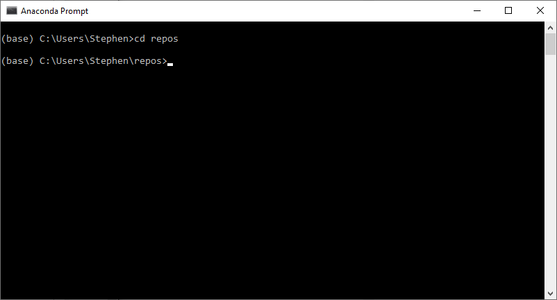
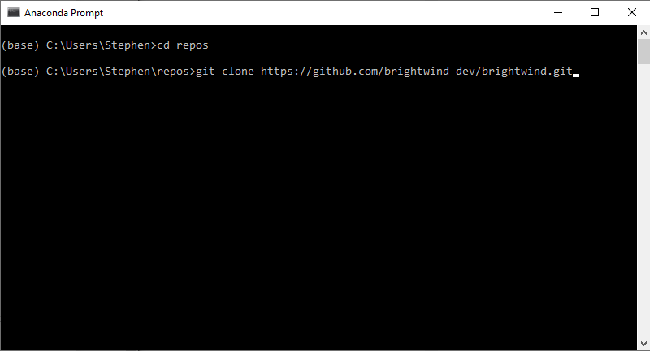
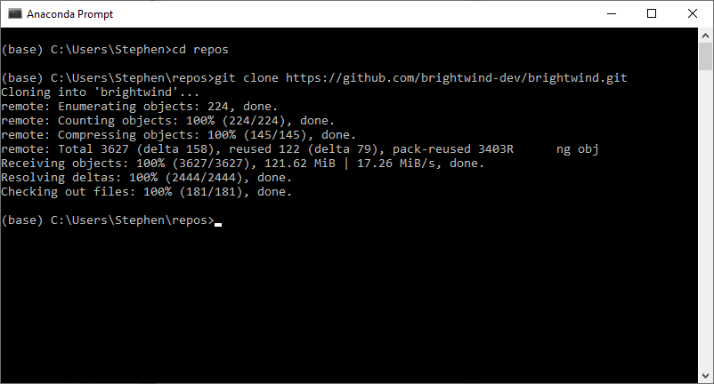
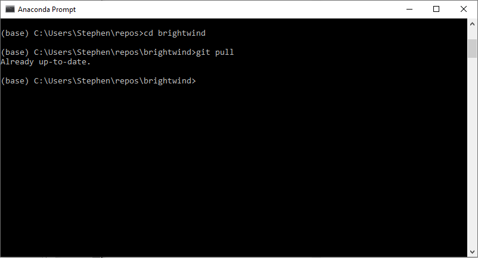
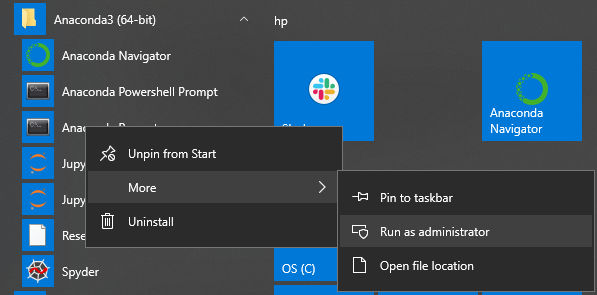
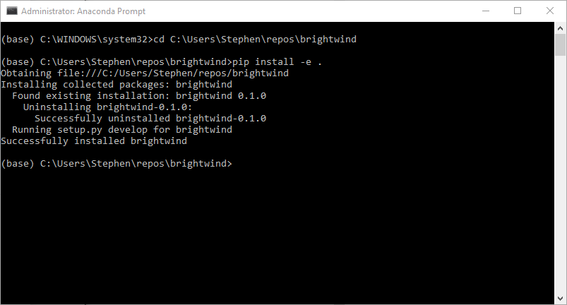

[1]:
import datetime
print('Last updated: {}'.format(datetime.date.today().strftime('%d %B, %Y')))
Last updated: 24 June, 2019
This guide will lead you through all the steps required to get the latest beta versions of the library before they are released on PyPI. This tutorial assummes a decent level of knowledge regarding Git, Python, Anaconda (if on Windows) and Jupyter notebooks. Once setup the library can easily be updated at any time to include the latest additions and updates. These steps will include:
Cloning the brightwind library
Installing
Using the brightwind library in Jupyter notebooks
This assumes that you have pip and git installed already.
If on Windows, open up the Anaconda Prompt command line utility. Otherwise open up a command line.
Navigate and/or create a folder where you keep all of your repositories.

Next clone the brightwind library from the brightwind GitHub repository, located at: https://github.com/brightwind-dev/brightwind
> git clone https://github.com/brightwind-dev/brightwind.git


The library can of course be updated at anytime using git pull when you navigate to the brightwind directory.
> cd brightwind
> git pull

Open up the Anaconda Prompit in Administrator mode by right clicking (in Windows) the Anaconda Prompt icon and ‘Run as Administrator’.

Navigate to the brightwind folder and with pip, the library can be installed using:
> pip install -e .
* Don’t forget the dot at the end.
If the brightwind library was installed previously this will automatically uninstall it before the new one is installed.

The brightwind library can now be used in a Jupyter Notebook as if it was installed using pip install brightwind.
[2]:
import brightwind as bw
data = bw.load_csv(bw.datasets.demo_data)
data.head(5)
[2]:
| Spd80mN | Spd80mS | Spd60mN | Spd60mS | Spd40mN | Spd40mS | Spd80mNStd | Spd80mSStd | Spd60mNStd | Spd60mSStd | ... | Dir78mSStd | Dir58mS | Dir58mSStd | Dir38mS | Dir38mSStd | T2m | RH2m | P2m | PrcpTot | BattMin | |
|---|---|---|---|---|---|---|---|---|---|---|---|---|---|---|---|---|---|---|---|---|---|
| Timestamp | |||||||||||||||||||||
| 2016-01-09 15:30:00 | 8.370 | 7.911 | 8.160 | 7.849 | 7.857 | 7.626 | 1.240 | 1.075 | 1.060 | 0.947 | ... | 6.100 | 110.1 | 6.009 | 112.2 | 5.724 | 0.711 | 100.0 | 935.0 | 0.0 | 12.94 |
| 2016-01-09 15:40:00 | 8.250 | 7.961 | 8.100 | 7.884 | 7.952 | 7.840 | 0.897 | 0.875 | 0.900 | 0.855 | ... | 5.114 | 110.9 | 4.702 | 109.8 | 5.628 | 0.630 | 100.0 | 935.0 | 0.0 | 12.95 |
| 2016-01-09 17:00:00 | 7.652 | 7.545 | 7.671 | 7.551 | 7.531 | 7.457 | 0.756 | 0.703 | 0.797 | 0.749 | ... | 4.172 | 113.1 | 3.447 | 111.8 | 4.016 | 1.126 | 100.0 | 934.0 | 0.0 | 12.75 |
| 2016-01-09 17:10:00 | 7.382 | 7.325 | 6.818 | 6.689 | 6.252 | 6.174 | 0.844 | 0.810 | 0.897 | 0.875 | ... | 4.680 | 118.8 | 5.107 | 115.6 | 5.189 | 0.954 | 100.0 | 934.0 | 0.0 | 12.71 |
| 2016-01-09 17:20:00 | 7.977 | 7.791 | 8.110 | 7.915 | 8.140 | 7.974 | 0.556 | 0.528 | 0.562 | 0.524 | ... | 3.123 | 115.9 | 2.960 | 113.6 | 3.540 | 0.863 | 100.0 | 934.0 | 0.0 | 12.69 |
5 rows × 29 columns
This tutorial can be downloaded as a Jupyter Notebook from the following link: https://github.com/brightwind-dev/brightwind/tree/master/docs/source/tutorials/getting_beta_versions.ipynb